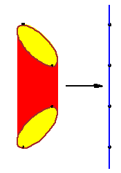

Betti number bounds for fewnomial hypersurfaces via stratified Morse theoryFrédéric Bihan and Frank Sottile. |
 | |
|
We use stratified Morse theory for a manifold with
corners to give a new bound for the sum of the Betti numbers of a hypersurface
in Rn> defined by a polynomial with
n+l+1 terms.
The figure at right illustrates a Morse function on the Cannoli shell. |
||